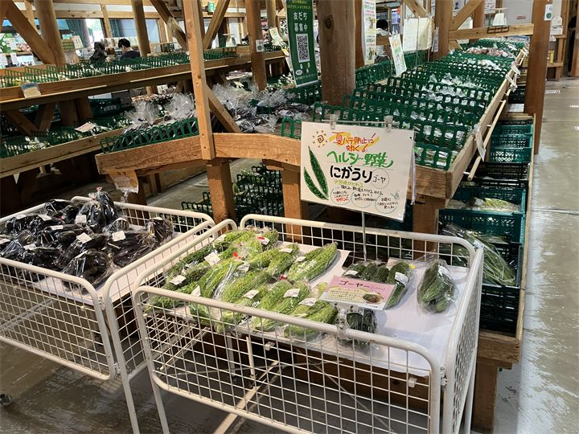
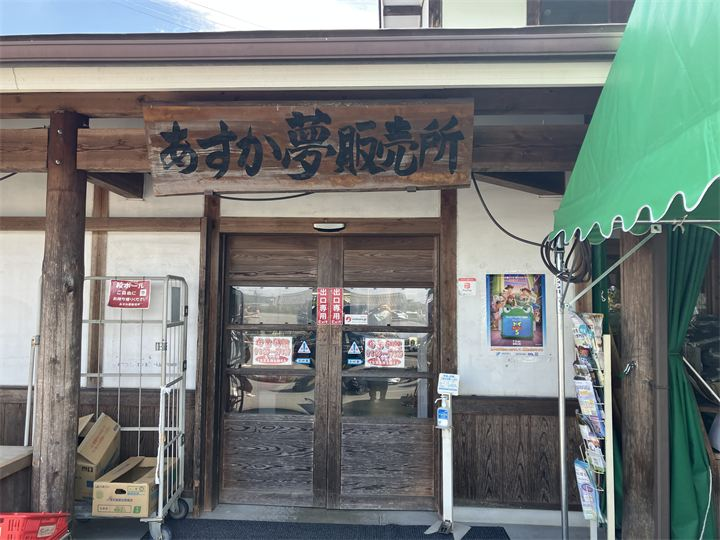
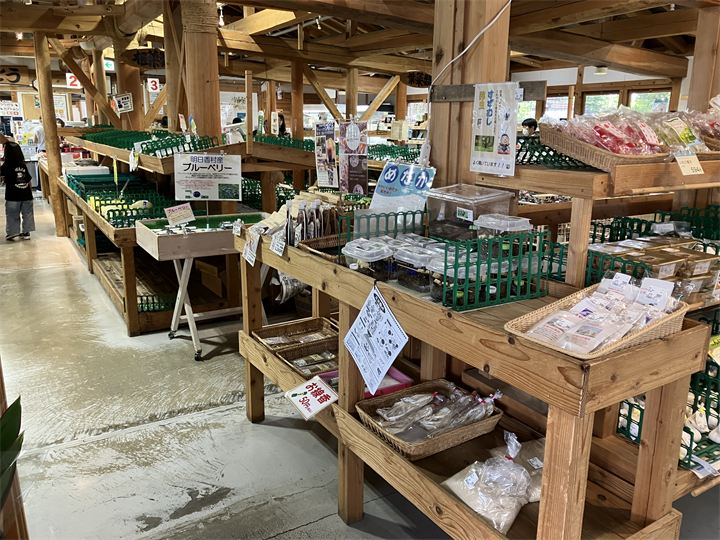

明日香村の特産品が揃う
地元農家が育てた野菜や果物、加工品など、明日香ならではの商品を購入できます。

あすか夢販売所は、近鉄飛鳥駅前の、道の駅飛鳥にある明日香村の農産物直売所です。 地元で採れた新鮮な野菜や果物、古代米、加工品など、明日香ならではの商品を購入できます。 観光の途中や帰り道に立ち寄りやすく、明日香のお土産探しにもおすすめの施設です。
| 営業時間 | 9:00〜17:00 |
|---|---|
| 定休日 | 年末年始 |
| 料金 | 無料 |
| 所要時間 | 15〜30分 |
| 駐車場 | あり（無料） |
| アクセス | 近鉄飛鳥駅から徒歩約2分 |
| 地図 | 地図はこちら |

地元農家が育てた野菜や果物、加工品など、明日香ならではの商品を購入できます。

古代米や季節の農産物など、旅の思い出になる商品を見つけることができます。
あすか夢販売所は、明日香村の農産物や特産品を地域内外へ届ける直売施設として親しまれています。 飛鳥駅のすぐ近くにあり、観光客にも利用しやすい明日香観光の立ち寄りスポットです。